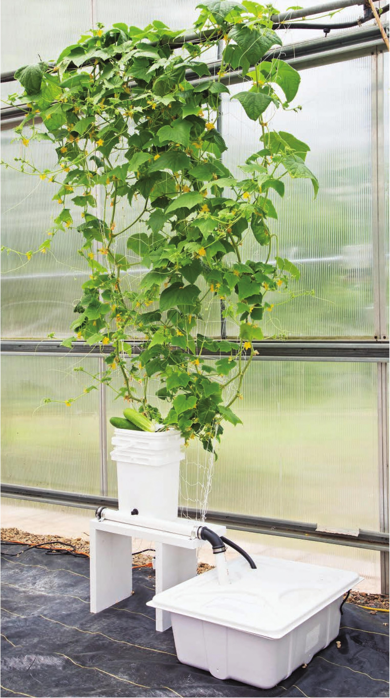

A trellis is very helpful with large, sprawling crops like cucumbers. It can help manage and contain the growth to a small footprint by directing the growth vertically. HYDROPONIC GROWING SYSTEMS 91
